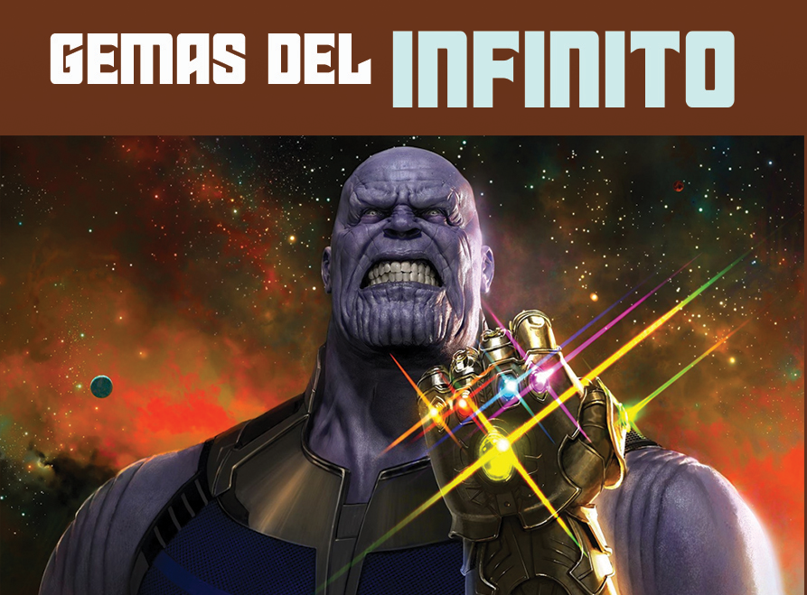
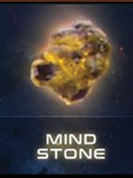
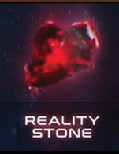
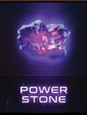
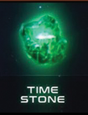
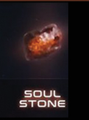
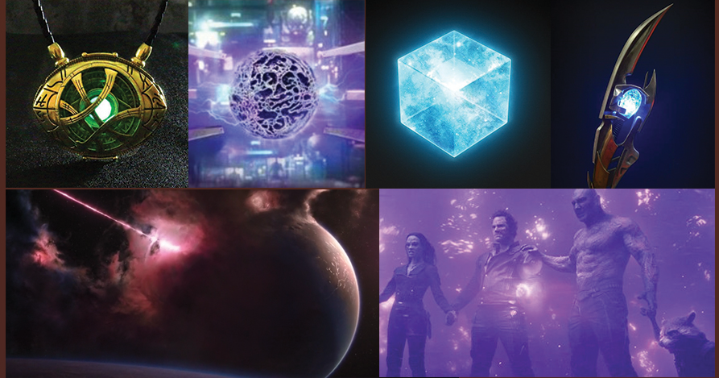

|  | |||||
|
Las Gemas del Infinito fueron seis objetos inmensamente poderosos, similares a unas piedras, vinculados a diferentes aspectos del universo, creadas por las Entidades Cósmicas. Cada una de las Gemas poseía capacidades únicas que fueron manejadas y alteradas por diferentes civilizaciones extraterrestres a través de los milenios. Sólo los seres de inmenso poder pudieron manejar las Gemas, como los Celestiales y los Titanes, los seres inferiores son incapaces de captar su poder ya que serían desintegrados, como cuando la desaparición de Johann Schmidt a causa del Teseracto y la incineración de Carina por el Orbe, estos efectos podrían reducirse si un grupo de personas compartía el poder entre ellos como los guardianes de la galaxia lo hicieron en la primera película
|
|||||
|  |  |  |  |  | |
|
También era posible colocar una Gema del Infinito dentro de un recipiente para evitar que una persona la toque directamente, lo que le permitía al usuario ejercer el poder de la Gema sin sufrir repercusiones. Algunos casos fueron, por ejemplo, la Gema del Espacio dentro del Teseracto, la Gema de la Mente dentro del Cetro y más tarde en la frente de Visión, la Gema del Poder dentro del Orbe y luego en la Vara Cósmica, la Gema del Tiempo dentro del Ojo de Agamotto, la Gema de la Realidad convertida en el Éter, la Gema del Alma sellada en Vormir, y todas las Gemas del Infinito insertadas en el Guantelete del Infinito. Cuando Thanos recolectó las seis Gemas del Infinito con éxito durante la Guerra del Infinito, utilizó sus poderes para provocar el Chasquido, eliminando a la mitad de todos los seres vivos en el universo. No obstante, al llevar a cabo este acto se dio a conocer que el portador sufriría daños severos en su cuerpo, por lo que una persona normal sería incapaz de manejarlas todas |
|||||
|  | |||||